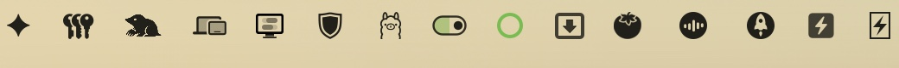
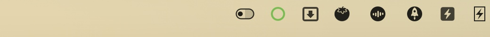
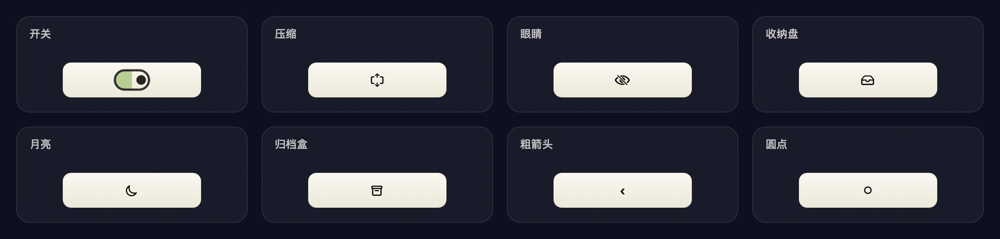

更优雅的
菜单栏开关
一个开关，收起菜单栏左边那些不常用的图标。没有设置面板，没有后台进程，也不占你任何注意力。

上：展开，开关在右、底板绿色 下：折叠，开关在左、左侧图标收起
Why it feels right
四个词，就够了
这个工具不打算做功能大全。它只想在菜单栏里安静地待着，需要的时候帮上一下。
简单
没有规则、没有分组、没有设置面板。拨一下就收起，再拨一下就回来。
不占空间
没有守护进程、没有网络请求。它只是菜单栏里多出的一个小方块。
开源
全部源码与构建脚本公开。它要辅助功能权限，所以你必须能看清它到底做了什么。
有趣
开关、眼睛、托盘、月亮、压缩……还有轻音效。一个小工具，也可以不无聊。
Two states
一眼看懂现在的状态
位置是主信号，颜色是辅助。不需要记箭头方向。

展开
圆点在右、底板绿色。菜单栏完整，所有图标可见。

折叠
圆点在左、底板灰色。开关左边的图标全部收起，右边保持可见。
Three modes
同一个开关，三种脾气
1.1 新增两种玩法。右键菜单 → 模式，随时切换，选择会记住。
Switch
点一下收起，再点一下展开。18 种图标任选，不自动合上。
Box
展开 10 秒后，一只手从屏幕上方伸下来，把开关按回去，菜单栏跟着合上。
Crazy
♞ 会把菜单栏挤出一块空地，躲三次，第四次才抓得住。摔下菜单栏、响一声，然后切换。
On a real Mac
真实菜单栏里的样子
截图来自一台日常使用的 Mac，原样未做处理。左边那段空出来的位置，就是被收起的图标。


18 styles
图标可以换，挑几个好看的
一共 18 种，右键菜单里随时切换、立即生效。下面放几个我自己常用的：

Details
为了“简单”，做了一堆不简单的事
你看到的只有一个开关，背后是为了让它不打扰你。
用系统的方式决定收哪些
按住 ⌘ 把图标拖到开关左边；左边的全部收起，想留谁再拖回右边。顺序由 macOS 记住，不需要在设置里维护列表。
每次折叠都重新扫，只要 20–30 ms
不缓存布局，所以你刚拖过的位置马上生效，不会出现“点了没反应”。
轻音效，可以关
折叠一声 `Pop`、展开一声 `Tink`，音量 12%。右键菜单里一键静音。
失败就放开，绝不乱藏
私有接口失效时立刻恢复正常显示，不会留下一堆找不回来的图标。
{
"hotkey": "opt+cmd+h",
"icon": "toggle",
"expandMode": "allowlist",
"sound": "tink",
"soundVolume": 0.12
}
只改三行：快捷键、图标样式、音色。其余都在右键菜单里。
Install
三步，一分钟
必须放在 /Applications —— 系统的菜单栏白名单只认这个目录。
拖进 Applications
打开 dmg，把 BlankTop 拖到 Applications 文件夹。
授权辅助功能
首次运行会请求权限，在「隐私与安全性 → 辅助功能」里勾选「留白」。
⌘ 拖几下
按住 ⌘ 把图标拖到开关左边，点一下开关；想留谁再拖回右边。